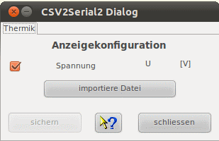
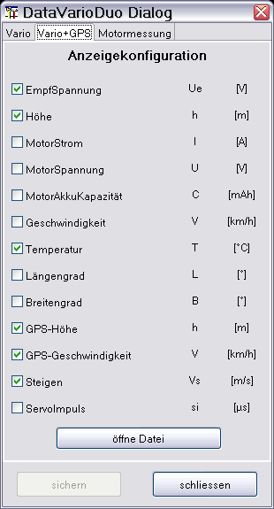
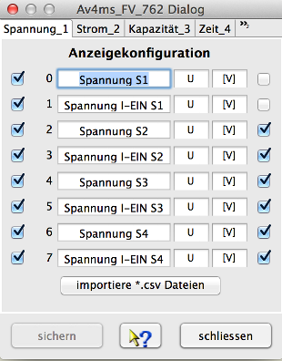

Der gezeigte Gerätedialog dient zur Konfiguration der Anzeige der ausgelesenen Daten. Über einen Dateiauswahldialog, erreichbar über "öffne Datei", können auch neue Dateien eingelesen werden. Da der Konfigurationsdialog dynamisch aufgebaut wird, sieht dieser für jede Gerätekonfiguration unterschiedlich aus. Beispielhaft sind hier zwei Dialoge gezeigt.

Hinweis: Ist die Anzeige erst einmal konfiguriert, wird diese Anzeigekonfiguration auch angewendet, wenn über die Kanal/Konfigurations- Auswahl in der Toolbar eine Konfiguration gewählt und dann über "importiere Datei" in der Toolsleiste der Dateidialog geöffnet und eine Datei eingelesen wird.
Über den gezeigten Gerätedialog können die Messwertnamen oder Einheiten angepasst werden. Im Normalfall sollte das aber nicht nötig sein. Das AV4ms bezieht seine Daten im Normalfall über die serielle Schnittstelle vom Ladegerät. Mittels eines USB-Loggers können Daten in Form von Textdateien gesammelt werden. Über das Menü oder diesen Dialog "importiere Datei", können die Daten dann eingelesen werden.

Hinweis: Nicht alle firmware Versionen bedienen all Kanal-Konfigurationen und bleiben deshalb leer.